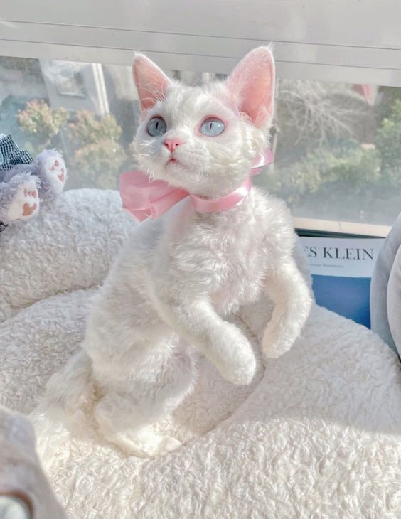
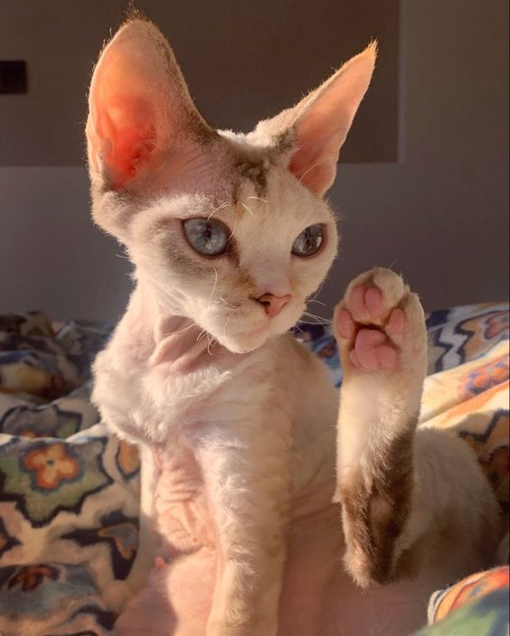
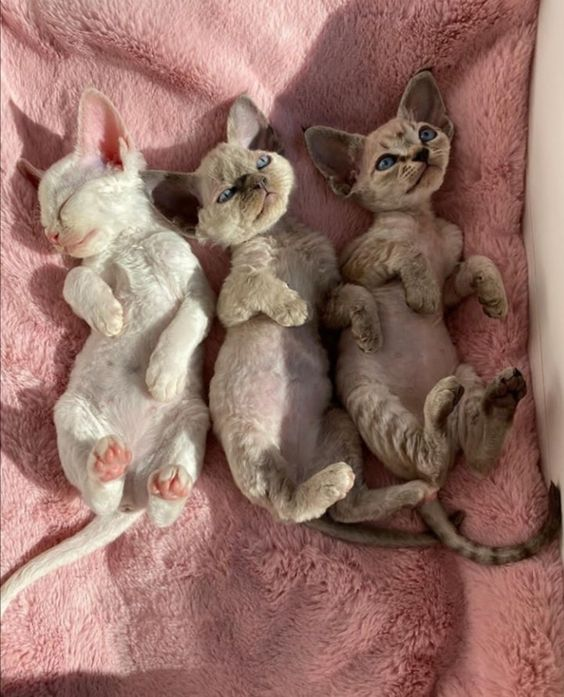
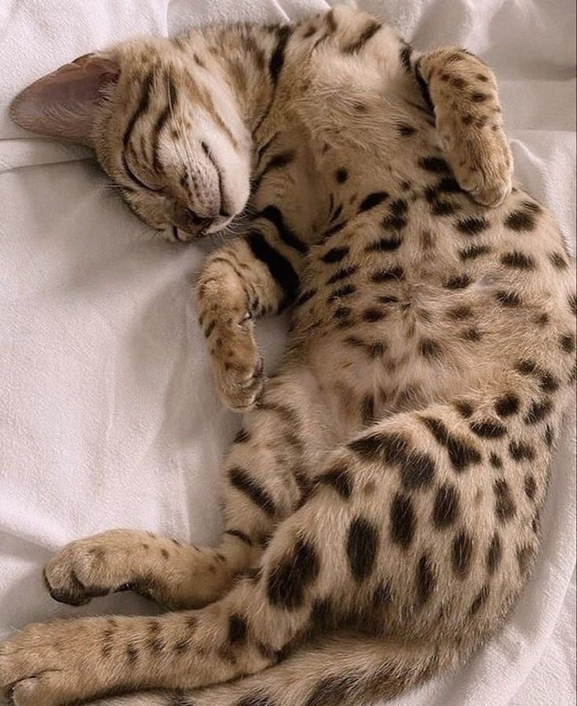
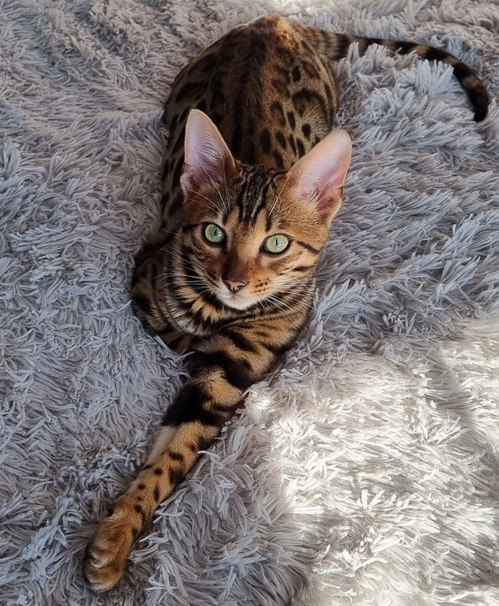
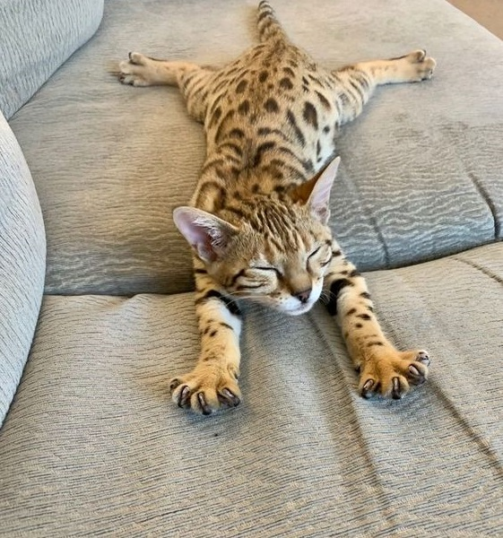
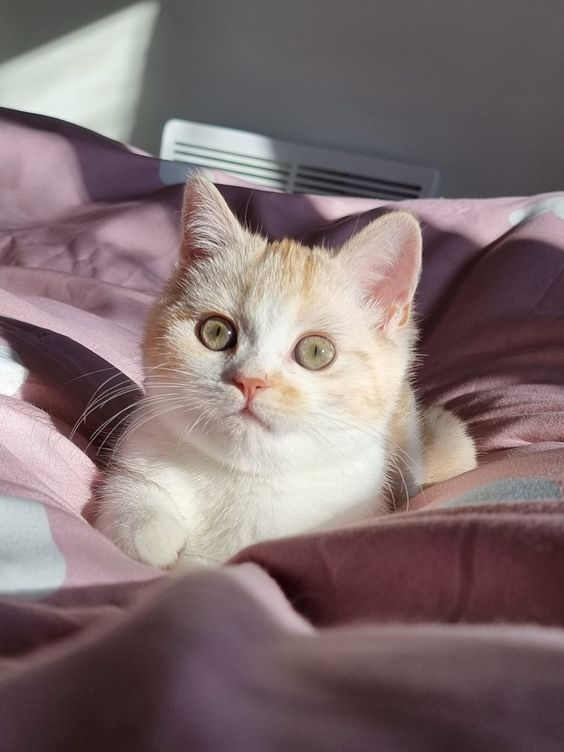
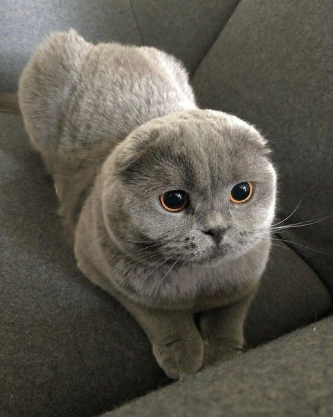
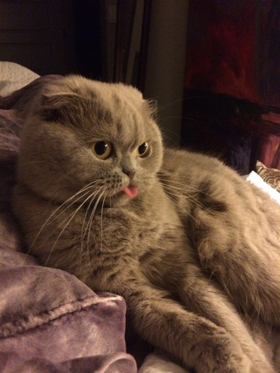

Давно хотели завести кошку, но не знали какую пароду выбрать?
Или вам просто не хватает красоты в этом сером мире?
Отлично, тогда вы по адресу! Здесь вы увидите самый милейших созданий на свете, которые заставят вас выложить крупную сумму из своего кошелька.
Девон рекс
Девон-рекс – ушастый котёночек с мягкой, волнистой шёрсткой и огромными глазами.
Родом из Соединённого Королевства, однако попить с ним чай и поговорить о погоде не получится.
Но поверьте, он затмит любого Тома Харди и Роберта Паттинсона.
Так что если ловите краш на британцев - смело берите эту очаровшку, и он будет предан вам до конца своих дней.
Сам по себе девон-рекс довольно быстрый и прыгучий. Возможно, из-за своих ушей он возомнил себя супергероем из Готэма, который просто гоняется за злодеями.
Поэтому с появлением пушистого Бетмена в вашей квартире можно не переживать за безопасность. Как говориться: Этому городу нужен новый герой.
Не забываем, что этот мистер из Англии, поэтому доброжелательность и учтивость - важные стороны его характера.
Так что если вы приведёте в гости еще одного зверька, он накроет ему стол, застелит постель и разделит с ним свой лоток.
Девонские мурки чрезвычайно любознательны и игривы, будьте готовы приобрести отдельный шкаф для их игрушек.
Как оказалось, ценооброзование на данных зверушек процесс сложный. Учитывается любое пятнышко на шерсти и его непутевый прадед в десятом поколении.
Но мы люди не гордые, нам подойдёт котик с любыми дефектами внешности и любой родословной. Такого можно приобрести за 20-25 тысяч рублей.
40817810404007957543 Номер счёта для пожертвований на покупку девон рекса
У неё шерсть как у барашка, и кормить кошку нужно только пастой!
Maxim Oinoshev, IU BS21 SD-03 | python backend | Tinkoff

Упаковано с любовью

Эть

У вас тройня
Бенгальская кошка
Бенгальская кошка – уникальный пример успешного скрещивания дикой и дерзкой тигрицы и домашнего кота Бориса. Поэтому это супер активные, игривые и общительные питомцы, готовые порвать за Вискас. P.s. Хотя Вискас они вряд ли одобрят, придётся кормить деликатесами.
Бенгальская кошка - это Моника Белучи в мире зверей. Только посмотрите на её грацию и осанку!
Благодаря окрасу она также очень узнаваема, поэтому готовтесь к восхищенным взглядам и постоянным папарациям.
Пройдите вместе с ней тест на абьюзера. Скорее всего им окажитесь вы.
Эти полосатики очень преданны и отзывчивы, не проявляют немотивированную агрессию, не критикуют, не запрещают общаться с друзьями, не обесценивают твои чувства...
извините, отвлеклась на больное. В общем, с ней вы точно будете счастливы!
У вас дома скопился огромный слой пыли, а на полу можно найти, что перекусить на завтрак?
Чтож, тогда вам придётся стать лучшей версией себя ради этой королевы.
Чистота и уют - их первый критерий при выборе дома. Её можно понять, она себя не на помойке нашла.
Стоит такая малыха не мало. Цена начинается от 15 000 рублей и улетает в небеса до 150 000 рублей. Ну а чего вы хотели, зато элитно и презентабельно. Считайте ваш домашний питомец - леопард.

В жёстком отрубе

Взгяд презрения

Я не выспався
Британская кошка
Представляю вам еще одного выходца из London is the capital of Great Britain - Британскую кошку.
Флегматичность, спокойный нрав, воспитанность - всё про неё.
Если вы тот самый уравновешенный и хладнокровный Телец, то вы точно подружитесь.
Вы комплексуете по поводу своих щёк и широкой кости? Отставить депрессию!
Посмотрите как мило смотрится круглая мордочка и коренастое тело у этого комка счастья.
А ещё этот плюшевый мех... В общем, любите себя!
Язык любви у этой мордочки с маленькими ушками точно не прикосновения. Она будет открыто проявлять к вам свою привязанность, только вот без этих ваших обнимашек и таскания на ручках.
Определяя её тип личности, можно сделать вывод, что она амбиверт.
Она вроде и не против посидеть с друзьями за баночкой молока, и также не против провести неделю в полном одиночестве, думая о смысле жизни.
Прекрасно её понимаю...
Ценник на данное чудо складывается из многих факторов. Если вам не нужна дочь кошачьего короля из титулованной семьи с задатками Энштейна, то хватит и 10 000 рублей.
Ну а если вы решили, что кот умнее и чистокровнее вас - ваша мечта, да ещё и в добавок выбрали самый необычный окрас, то примите тот факт, что питомец обойдётся в копеечку размером 50 000 рублей.

Происходит отдыхание

Не можу без тебя

Я дурачок
На этом мой топ подошёл к концу. Уверена, вам точно пригянулась хоть одна котейка, и вы расчехляете свои кошельки.
Но помните: влюбляться нужно тогда, когда вы готовы, а не когда одиноко.